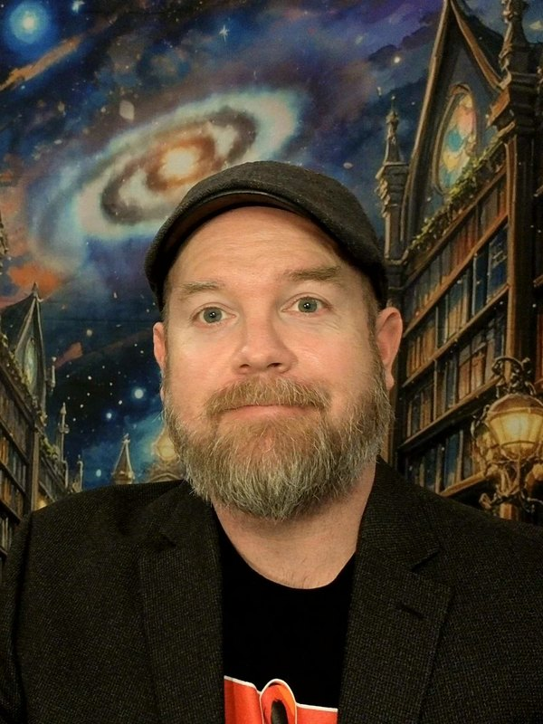

Both were edited by one. Drag the seam to compare. This is the whole course in one picture: the machine gets you most of the way, and the part it gets wrong is the part that matters.
Dr. Blue Brazelton is a passionate educator and thought leader at Northern Arizona University, where he serves as a Professor of Higher Education. With over 15 years of experience, he is dedicated to fostering student success and driving innovation in the classroom. He earned his Ph.D. in Educational Technology from Arizona State University and has published widely on online learning. In his free time, he enjoys hiking the beautiful trails of Flagstaff with his dog.

Associate Professor of Educational Leadership, Provost Leadership Fellow, and AI Fellow at Northern Arizona University. Twenty-plus years in higher education across five institutions. B.A. in English Literature and Philosophy (Texas Tech), M.S.Ed. (SIU Carbondale), Ph.D. in Higher, Adult, and Lifelong Education (Michigan State). Grew up on a farm outside Sweetwater, Texas, home of the world's largest rattlesnake round-up. Moved seven times between undergrad and a tenure-track job. Proud member of the MySpace generation. Lives in Flagstaff and runs his research life through a small team of AI personas led by a mechanical owl.
Each one is true. Each one is also a story, which is the part the number leaves out.
My research program asks how colleges organize, govern, and adapt to AI. I coded the public AI governance posture of 400 institutions across 11 dimensions, then expanded it to a 596-institution panel that gets tracked every quarter.
Three findings in plain English: the fanciest governance lives at research universities while the schools serving the most learners have the least of it; cross-functional teams beat silos; and the sector has mostly walked away from AI detection tools in favor of guidance. That last one is why this course asks you to use AI out loud instead of hiding it.
My philosophy: your expertise shapes the work. You are not labor serving my research agenda.
Proof it works: Dr. Cristina Baciu was my doctoral advisee. She is now my co-author on Beyond the Campus, a book about e-mentoring. We wrote an entire book about mentoring at a distance and have been in the same room exactly once.
Grew the Community College and Higher Education program from two faculty to five, rewrote both the master's and doctoral curricula, and ran a full seven-year program review. Also served as Vice President of the Faculty Senate, which is a sentence that sounds more glamorous than the meetings were.
A fake radio station broadcasting into a slow apocalypse. Forty-five two-hour episodes, one a day, with a DJ named Cass whose van dies in a marsh town in Michigan's Upper Peninsula. Music by Suno, voice by ElevenLabs, art by Midjourney, stitched together with ffmpeg and a lot of stubbornness.
Why it's on this page: it is the single best AI-literacy exercise I have ever done, and nobody assigned it. Listen if you dare.
Three sections of this exact course used AI on every assignment and wrote about what it felt like. Turns out the big emotions (dread, delight, both at once) matter more than the button-clicking. So this class is built around low-anxiety entry points. If you are nervous, you are the target audience.
From 2017 to 2024 I was an Instructional Fellow for the Master Educator Course, preparing Army ROTC officers to become faculty. A train-the-trainer model, run on a residential schedule, with a student population that is very, very punctual.
The hub persona is named Bubo, after the owl in Clash of the Titans (1981). He routes to a strategist, a writer, an editor, a researcher, a project manager, and a health coach. I did not know what a multi-agent system was when I built one. I was just trying to edit fourteen book chapters without losing my mind.
Expect to hear about it. This is what "technological fluency" looks like when it compounds.
The Hourglass: a weekly time-blocking app you plan with any AI, then drag around. DidaRec: a free, open-source screen recorder for faculty. And the blog, every other Tuesday, about AI in higher ed, with jokes.
Two of these are real. One was made up by a language model that had read my bio and was told to extrapolate. Pick the fake.
No wrong answers, just one wrong fact.
Notice why it works. The model knew I am a proud MySpace-generation person and that I co-wrote a book about mentoring online. It fused two true things into one false thing with a confident sentence structure. That is not a bug in the model. That is how the model works, every time. The real dissertation is on ProQuest. It is not about MySpace.
Your job this semester is to catch sentence C in the wild.
Here is the exact prompt behind the "AI Me" bio at the top, the raw output, and my red pen. Toggle the pen to see what a one-sentence prompt gets wrong when it has nothing to go on but a name.
Write a short professional bio for Blue Brazelton, a professor at Northern Arizona University.
This is the assignment. All semester.
Sixty seconds, fully AI-generated, objectively ridiculous. Lyrics by Claude, music by Suno, approved by a human with regrets.
blue-jingle.mp3 next to this page, or change the src above.Verse From a farm outside Sweetwater, where the rattlesnakes roam, Through seven different zip codes till Flagstaff felt like home, He's got a mechanical owl and a radio show, He's Dr. Blue, and he wants you to know: Chorus Use the robot! (Use the robot!) But check its work! (Check its work!) It'll write you a bio with a dog and a quirk, Half of it's true and the other half's smoke, CCHE 590, that's the course, that's the most! Tag Technological Fluency and Leadership. GenAI for real. Bring questions.
How it was made: lyrics drafted by Claude from my bio and lightly edited by me, melody and performance generated in Suno, three takes, kept the dumbest one.
This is the course norm. Every assignment you turn in gets one of these.